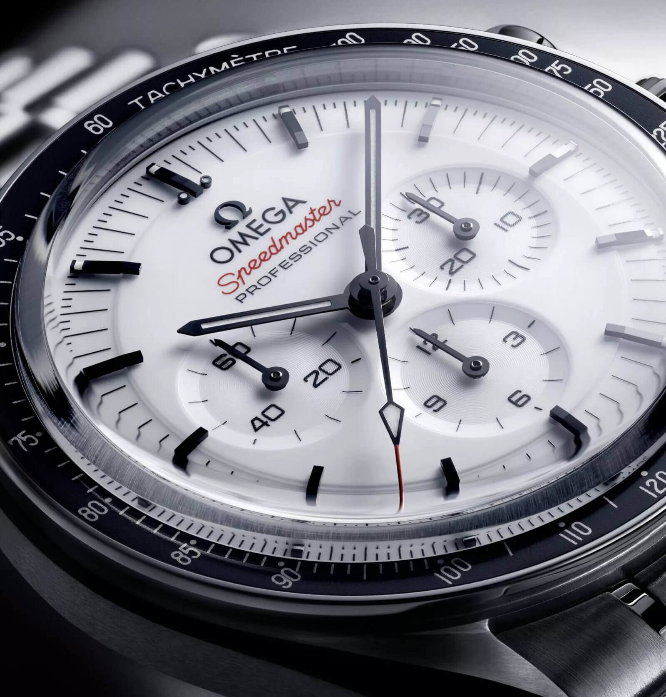

Omega Has a Celebrity Problem
When you see a celebrity wearing an Omega, what do you feel? Not what Omega wants you to feel. What you actually feel. If you're like me, you feel nothing. Or even worse, you feel skepticism. When I see a celebrity wearing an Omega and my first thought is: "That is a paid gig". That is a problem.
 Nenad Pantelic • March 22, 2026
Nenad Pantelic • March 22, 2026

I think Omega has accidentally run one of the most interesting marketing experiments in recent memory. I think they've discovered a boundary that most brand theorists only talk about in the abstract: the point at which promotion becomes so widespread that it doesn't just stop working, it actively inverts. Every new ambassador doesn't add credibility. It subtracts it.
Here Is What Happened
Over the last few years, Omega has run what you might call a saturation strategy with celebrity partnerships. If you read any of Hodinkee's watch-spotting articles from the Oscars, you'll notice the pattern: Seamasters, Speedmasters, even obscure Globemasters and De Villes have become ubiquitous on the red carpet. Too many to be coincidence. Because they're not.
And then there is Daniel Craig. Poor Daniel Craig, who I'm sure is a lovely man, a man who probably has real feelings about watches, but who has been so thoroughly instrumentalized by Omega's marketing department that he has become less a person and more of an ad billboard.
You know the routine. Paparazzi photographs surface. Craig is somewhere, and his sleeve is rolled up just so, and on his wrist is something nobody has seen before. The Slack groups erupt. Reddit r/Watches crew begins its work. Everyone is zooming in, enhancing, arguing. And then, weeks later, Omega announces the watch. The white Speedmaster. Surprise! Except it was never a surprise. It was a press release in the shape of a candid photograph.
Recently, and this is the part that made me want to write this, I saw a Reddit thread. A blurry photo of Conan O'Brien. Someone asking what's on his wrist. It was a Seamaster NTTD on a mesh bracelet. A titanium watch. A serious watch. The kind of watch that, if you saw it on a man's wrist at a dinner party, you would think: this person understands something about the world that most people don't, namely that titanium is better than steel (of course) and life is short and you should wear what makes you happy, even if it's on a mesh bracelet.
But did I think that? I did not think that.
I thought: "I didn't know Conan had an Omega deal."
The Damage
The interesting thing is that brand ambassador deals work. Once or twice. They generates buzz. People talk about them. But they have a half-life, because every time they do it, they are teaching the audience to pattern-match. And watch enthusiasts are people who pay close attention to details. They're exactly the wrong audience to try this on repeatedly.
This is the part that I think is costly, and that I think Omega's marketing team is either unaware of or has decided to ignore. The damage isn't to casual consumers. Most people buying an Omega at an authorized dealer aren't reading Fratello and Hodinkee.
The damage is to us enthusiasts, the people who write about watches, who talk about them in forums, who influence what the next generation of collectors thinks is cool. Those people have had their default assumption rewritten. When we see an Omega in the wild now, we don't think "great watch." We think "what's the deal?"
They Had Something Real
The thing that makes this particularly painful is that Omega doesn't need to do this. This is a brand that went to the moon. The actual moon. Not a metaphorical moon, not a moon in the metaverse. Buzz Aldrin wore a Speedmaster while standing on the surface of a celestial body, and somehow, sixty years later, the marketing department has decided that what the brand really needs is more influencers.
You might ask me: "You're upset that a Swiss corporation is behaving like a corporation?" And you are right, Omega can do whatever the management thinks is productive. But still. I'm upset. Because they had something real, and they turned it into something sponsored, and now I can't tell the difference anymore.
Omega, here are my two cents: More promotion isn't always more effective. Sometimes it's less. And by the time you notice the damage, you've already taught your best customers and fans to stop believing you.